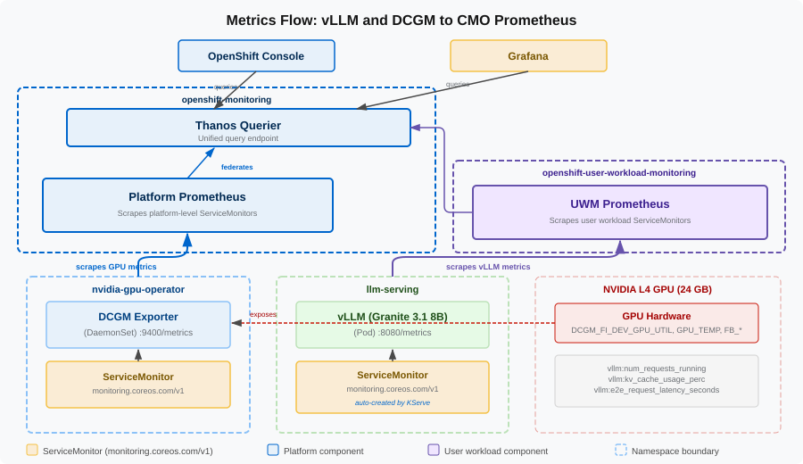

KServe and the Deployment Model
This section shifts from "what happens inside the model" to "how do we deploy it on OpenShift." Deploying a model on RHOAI 3.4 requires creating three Kubernetes custom resources in a specific order.
The Three-Resource Model
Each resource has a distinct role, and each must exist before the next one can reference it.
| Order | Resource | API / Scope | Role |
|---|---|---|---|
1 |
HardwareProfile |
|
Defines resource constraints: CPU cores, memory, GPU count. Referenced by InferenceService via annotations. Required for RHOAI dashboard visibility. |
2 |
ServingRuntime |
|
Defines the model serving platform: container image, startup command, port configuration, supported model formats. The container must be named |
3 |
InferenceService |
|
Defines the model deployment: model URI, runtime reference, resource limits, vLLM tuning arguments, deployment mode. |
Why Three Resources Instead of One?
This separation reflects how production organizations manage AI infrastructure:
-
HardwareProfiles are managed by platform engineers. They define what GPU hardware is available and enforce resource bounds. A profile created once can be referenced by many model deployments across the cluster.
-
ServingRuntimes are managed by platform engineers or MLOps teams. They standardize which container images and configurations are approved for use.
-
InferenceServices are created by data scientists or application teams. They specify which model to deploy and how to tune it — without needing to know the container image or GPU configuration details.
RHOAI ships pre-configured serving runtime Templates visible in the dashboard under Settings > Serving runtimes. When deploying via the dashboard UI, RHOAI creates the ServingRuntime CR from the template automatically. When deploying via CLI or GitOps (as in this course), you must create the ServingRuntime CR yourself. This is why oc get servingruntimes --all-namespaces returns nothing on a fresh cluster.
|
Key Fields in Each Resource
HardwareProfile
The HardwareProfile defines resource constraints for the RHOAI dashboard:
-
namespace: redhat-ods-applications— Always in the RHOAI operator namespace, not your project namespace -
spec.identifiers— Defines resource types with min/max/default values: CPU (1-8 cores), Memory (8Gi-24Gi), GPU (1 NVIDIA GPU) -
opendatahub.io/disabled: "false"— Makes this profile available in the dashboard
ServingRuntime
The ServingRuntime defines the model serving platform:
-
name: kserve-container— KServe requires this exact container name to inject storage initializer sidecars and volume mounts -
--served-model-name=\{{.Name}}— A Go template resolved by KServe;\{{.Name}}is replaced with the InferenceService name at runtime -
--model=/mnt/models— Where KServe’s storage initializer mounts the downloaded model -
image: registry.redhat.io/rhaiis/vllm-cuda-rhel9:3.2.4— The Red Hat certified vLLM image for CUDA/NVIDIA GPUs -
--port=8080— The RHOAI convention for both the vLLM API and the metrics endpoint
InferenceService
The InferenceService specifies which model to deploy and how to configure it:
-
serving.kserve.io/deploymentMode: RawDeployment— Uses standard Kubernetes Deployments instead of Knative Serving. Recommended for GPU workloads to avoid cold-start GPU allocation delays. -
runtime: granite-3-1-8b— Must exactly match the ServingRuntime name in the same namespace -
storageUri: oci://…— The OCI modelcar image from the Red Hat AI Services registry (~15 GB) -
nvidia.com/gpu: "1"— A Kubernetes extended resource request. The NVIDIA device plugin advertises GPU resources on each node, and the scheduler places the pod accordingly. -
--max-model-len=4096— Granite 3.1 8B supports up to 128K tokens natively, but that would cause immediate OOM on a 24 GB GPU -
--gpu-memory-utilization=0.90— Uses 90% of GPU memory for model weights and KV cache -
--enforce-eager— Disables CUDA graphs to save ~500 MB-1 GB of VRAM -
--dtype=float16— Native precision for the L4 GPU
What KServe Creates Automatically
When you apply an InferenceService with a valid ServingRuntime already in place, the KServe controller creates several Kubernetes resources automatically:
-
A Deployment running the vLLM container with your model
-
A predictor Service (
<name>-predictor) — headless ClusterIP for inference traffic -
A metrics Service (
<name>-metrics) — dedicated ClusterIP service on port 8080 for Prometheus scraping -
A ServiceMonitor (
<name>-metrics) — tells Prometheus to scrape the metrics Service -
A Route (via OpenShift) for external HTTPS access
The auto-created ServiceMonitor is a key RHOAI 3.4 feature. In earlier versions of KServe, you had to create a ServiceMonitor manually. RHOAI 3.4’s KServe controller creates one as part of InferenceService reconciliation, so vLLM metrics flow into Prometheus automatically once UWM is enabled.
What is not created automatically:
-
PrometheusRule — Alert definitions are your responsibility. That is the Alerting chapter.
-
Grafana dashboards — Visualization is also your responsibility. That is the Dashboards chapter.
The Auto-Created ServiceMonitor
When KServe reconciles an InferenceService named granite-3-1-8b, it creates:
-
A Service named
granite-3-1-8b-metricswith labelname: granite-3-1-8b-metricson port 8080 -
A ServiceMonitor named
granite-3-1-8b-metricsthat selects that Service
The key fields in the auto-created ServiceMonitor:
-
ownerReferences— The InferenceService owns this ServiceMonitor. If you delete the InferenceService, the ServiceMonitor is garbage-collected automatically. -
selector.matchLabels.name: granite-3-1-8b-metrics— Matches the dedicated metrics Service (not the predictor Service). -
endpoints[0].port: granite-3-1-8b-metrics— Matches by port name, not number. Using a port number instead of a name would silently fail.
This follows the same pattern as the NVIDIA GPU Operator, which auto-creates a ServiceMonitor for DCGM metrics. The operator that manages the workload also manages its observability wiring.
The Scraping Chain
The following diagram shows how metrics flow from data sources through the two Prometheus instances to consumers:

The complete path from model pod to queryable metric:
-
vLLM generates metrics internally (token counts, latencies, cache usage)
-
vLLM formats them as Prometheus text and serves at
:8080/metrics -
ServiceMonitor selector matches the Service → Pod labels
-
UWM Prometheus discovers the target (because the ServiceMonitor is in a user namespace and UWM is enabled)
-
UWM Prometheus scrapes
:8080/metricsevery 30 seconds -
Metrics stored as time series with labels (namespace, pod, model_name, etc.)
-
Thanos Querier can now serve these metrics alongside DCGM metrics
-
You query them in the OpenShift Console or Grafana
If metrics do not appear, check each link in this chain. You will do exactly this in the Verify the Metrics Pipeline exercise.
Model Choice: Why Granite 3.1 8B Instruct?
IBM Granite 3.1 8B Instruct is a deliberate choice that balances teaching effectiveness with realism:
| Consideration | Why It Matters for This Course |
|---|---|
Size: 8B parameters (~16 GB at FP16) |
Consumes most of the L4’s 24 GB VRAM, leaving only ~6-7 GB for KV cache. This tight memory budget makes KV cache pressure, request queuing, and GPU saturation observable under realistic load. |
Instruction-tuned |
Generates coherent, high-quality responses. Students can interact with the model naturally and see meaningful outputs. |
Red Hat ecosystem |
IBM Granite is the model family that Red Hat ships, supports, and validates. Students in a Red Hat training will encounter Granite in production. |
OCI modelcar format |
Available as a standard OCI container image (~15 GB). Version-controlled, security-scanned, and faster to deploy than downloading from HuggingFace. |
Memory-constrained on L4 |
With only ~10-11 concurrent requests before KV cache fills, the load test in the Alerting chapter naturally triggers every alert we define. |
A smaller model (3B parameters) would leave ~16 GB for KV cache, supporting ~26 concurrent requests. Under the same load test, the KV cache would never fill, queue backlog might never appear, and students would see metrics that never move in ways that demonstrate the concepts.